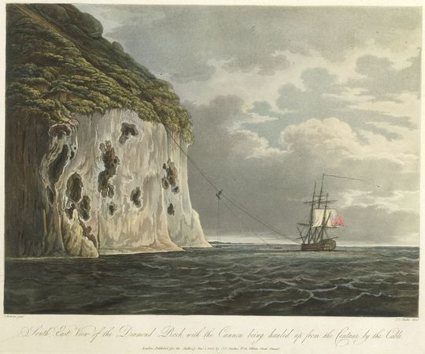
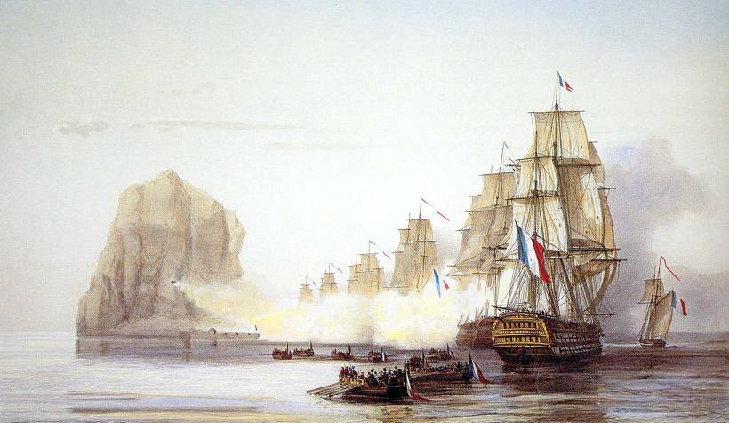
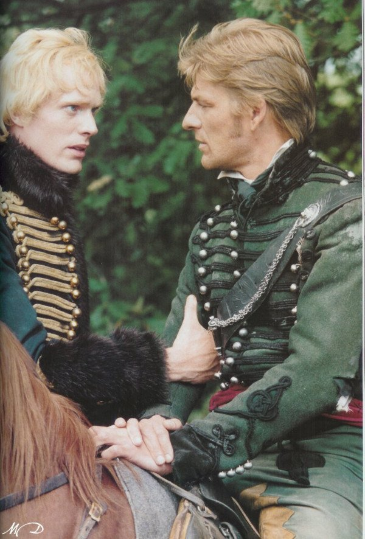

밥상의 사회 계급 - 바위로 만든 군함 이야기
게시: 2018-02-21T22:39:29+09:00
제가 카투사로 미군들과 근무했을 때, 미군애들의 재미있는 습관이나 행동거지들 몇가지를 보았습니다. 그 중 하나가, 인종간의 갈등에 대한 것이었습니다. 저희 부대는 Finance 부대였습니다. 한마디로, 행정병들로 구성된 부대였지요. 또, 부대의 1/3 정도가 흑인, 1/3은 멕시칸, 나머지 1/3이 백인으로 이루어져 있었습니다. 다른 부대보다 소위 '유색인종'의 비율이 높은 편이었는데, 고참 말에 따르면 특히 흑인들은 '사무실 근무'를 선호한다고 하더군요. 원래 흑인들은 육체 노동을 싫어하고, 사무실에서 펜대 굴리는 직업을 꼭 얻고 싶어한다고요. 저도 그랬지만 제 고참도 당시 인종적인 편견에 사로잡혀 있던 때이므로 뭐 그 이야기는 꼭 믿을 만한 이야기는 아닌 것 같습니다. 의외로, 어쩌면 당연히, 미군들 사이에 인종간 갈등은 없었습니다. 적어도 제 눈에는 안 띄였습니다. 다만, 인종간의 벽을 느낄 수 있었던 경우가, 바로 식사 시간이었습니다. 마치 무슨 규칙이라도 되는 것처럼, 서로 같은 부서에서 사이좋게 일하다가도, 점심 시간만 되면 같은 색깔끼리 모이더군요. 물론 전혀 예외가 없지는 않았지만, 이 규칙은 거의 잘 지켜지는 것 같았습니다. 밥먹는 것이 뭔가 좀 신성한 의식이라도 되는 것 같지요 ? 생각해보면 제가 제일 좋아했던 한국 영화인, 한석규 주연의 '넘버 쓰리'에서도 연관된 장면이 나옵니다. 막가파 두목인 송강호가, 어떤 폭력 의뢰인과 일식집 방에서 식사를 하는 장면이 있지요., 그 의뢰인이 한쪽 구석에서 기다리고 있던 송강호의 졸개들을 보고, '자네들도 좀 들지 그러나' 했더니, 송강호가 했던 대사 기억나십니까 ? "전 밑에 있는 애들하고 겸상 안받습니다." 즉, 일은 같이 하고, 옷도 비슷한 걸 입고, 같이 고생을 하더라도, 신분이 다른 사람들은 밥먹을 때 따로 먹는 것이 사회의 깰 수 없는 규칙이다 라는 것이지요. 그러고보면 세상의 모든 군대 중에서, 장교 식당과 사병 식당의 구별이 없는 군대는 없는 것 같습니다. 미해군의 경우, 특히 함상에서의 음식은 장교와 사병의 구별이 없다고는 하지만, 그래도 식당은 구별이 되어 있더군요. 일제시대의 일본군에서는, 사병들이 보는 앞에서는 장교들이 아예 먹는 모습을 보이지 말라고 하는 지침이 있었다는 이야기도 들었습니다. 사병과 같은 장소에서 식사를 했다는 이유로 군법 회의에 회부된 영국 장교도 정말 있었습니다. 그것도 카리브 해의 외딴 섬에서 말이지요. 사정은 이렇습니다. 1803년 영국 해군은 카리브 해에서 프랑스를 견제하고자, 프랑스령 마르티니크(Martinique) 섬 바로 남쪽에 붙은 외딴 바위섬 하나를 점령하고 요새화했습니다. 실은 말이 요새화이지, 사실은 그냥 지나가던 영국 해군 전함 센토어(HMS Centaur) 호에서 18파운드 포 2문과 24파운드 포 3문을 힘겹게 올리고, 수병 120 명과 장교 두 명을 배치한 것입니다. 뜨거운 카리브 해에, 그것도 적국 코 앞에 붙은 작은 바위 섬에 이렇게 배치된다는 것은 어떻게 보면 유형 생활이나 다름없는 일이었습니다. 아마 그 수병들이나 장교들은 미치고 환장할 노릇이었을 것입니다. 그러나 의외로 그 섬에 배치된 지휘 장교인 모리스(James Wilkes Maurice)는 무척이나 기뻐했습니다. 이유는 간단했습니다. 승진이었지요.

(HMS Centaur로부터 다이아몬드 섬 중간에 있는 동굴로 밧줄과 도르레를 이용하여 대포를 운송하는 장면입니다.) 다이아몬드 섬이라는 이름의 이 섬을 요새화한 것은 센토어 호에 타고 있던 후드(Hood) 제독이었는데, 이 양반의 선임 부관(1st lieutenant)이었던 모리스를 이 섬의 지휘관으로 배치하는 대신, 이 섬 자체를 요새가 아닌, HMS Diamond Rock이라는 이름의 정식 해군 슬룹(sloop, 프리깃함보다 더 작은 3~4백톤 급의 작은 포함)함으로 취역시키는 꼼수를 부렸습니다. 통상 슬룹함의 함장은 부관(lieutenant)이 아닌 준함장(commander)이었으므로, 이 조치는 자동으로 모리스를 준함장으로 승진시켜주는 것이었습니다. 당시 영국 해군 내의 모든 부관들의 꿈은 하루라도 빨리 준함장이 되는 것이었습니다. 그러나 준함장이 되려면 지휘할 슬룹함이 있어야 했는데, 부관들은 많고 슬룹함은 고작 200여척 밖에 없었으므로 그 경쟁은 그야말로 치열한 것이었습니다. 따라서 맡은 배가 돛과 닻이 달린 진짜 슬룹함이건 바윗돌로 된 다이아몬드 섬이건 상관없이, 모리스는 정말 모든 부관들이 그리던 꿈을 이룬 셈이었습니다. 이들은 17개월 동안 이 섬, 아니 HMS Diamond Rock을 잘 지키고 있었는데 이들을 이 무인도에서 구원(?)해줄 대함대가 1805년 5월 나타났습니다. 나폴레옹의 명령을 받은 빌뇌브 제독의 프랑스-스페인 연합 함대가 넬슨 제독의 함대를 유인하기 위해 카리브 해에 나타난 것입니다. 이들은 이 조그만 다이아몬드 섬을 공격했고, HMS Diamond Rock은 맹렬히 포격을 주고 받으며 싸웠습니다. 확실히 단단한 바위로 만들어진 불침함 HMS Diamond Rock은 강했습니다. 가진 전력은 24파운드 포 3문과 18파운드 포 2문, 그리고 겨우 107명의 병력 뿐이었고, 그에 비해 프랑스군은 전열함 2척에 프리깃함 1척, 포함 11척 등에 해병대만도 400여명에 달했지만, 치열한 포격전 속에서도 영국측 사상자는 1명 사망에 2명 부상 밖에 없었습니다. 프랑스-스페인 함대의 해병대 수백명이 약 50명의 희생을 내며 상륙에 성공하긴 했지만 아무 소용이 없었습니다. 해변에는 상륙했지만, 영국군이 바위섬 위로 올라가는데 사용하던 사다리를 치워버리니, 영국군이 있는 깎아지른 듯한 바위 절벽 위를 기어오를 방법이 없었던 것입니다.
하지만 깎아지른 듯한 바위섬이 지키기에 꼭 좋은 것만도 아니었습니다. 바위섬이라는 특성상, 이 섬에는 식수를 얻을 샘이 없었습니다. 이 치명적인 약점을 영국군은 커다란 바위로 만든 저수조에 약 1달치의 식수를 보관함으로써 해결하려 했습니다. 이 물은 빗물도 모으고 인근 프랑스 식민지인 마르티니크(Martinique) 섬에서 현지 주민에게 몰래 돈을 주고 얻어오는 방식으로 구했습니다. 그런데 포격의 충격 때문인지, 그렇지 않아도 불안한 이 바위 저수조에 금이 가 물이 새는 것이 발견되었습니다. 게다가 탄약도 바닥이 나고 있었으므로, 결국 영국군 지휘관 모리스는 항복해야 했습니다. 다행히도, 밥만 축낼 뿐 아무 짝에도 쓸모가 없는 포로들을 싣고 영불 해협으로 돌아갈 생각이 없던 빌뇌브 제독은 인근 바베이도스 섬으로 이 포로들을 송환해주었습니다.

(1805년 HMS Diamond Rock의 함락 또는 나포 장면입니다. 프랑스-스페인군은 저 섬을 함락시킨 뒤, 빼앗은 대포는 바다 속에 던져 버렸습니다. 이 섬 주변에서는 스쿠버 다이빙을 하는 사람들도 종종 있는데, 최소한 1개의 대포가 그런 다이버들에 의해 발견되었다고 합니다. 건지지는 않았대요.) 사정이야 어쨌건 이 섬은 형식적으로는 정식 영국 군함이었으므로, 그 함장인 모리스는 군함을 적에게 빼앗긴 모든 함장이 거치게 되어있는 군법회의에 관례대로 회부되었습니다. 당연히 할 바를 다 한 것이 인정되어 모리스는 무죄 선고를 받았을 뿐만 아니라, 그의 모범적인 방어 노력에 대해 해군 제독들로 구성된 재판부로부터 찬사를 받았습니다. 찬사로만 끝나지 않았고, 곧 다른 슬룹함, 이번에는 돛과 닻이 달린 진짜 슬룹함을 배정받아 진짜 함장이 될 수 있었습니다. 모리스 함장은 나중에 해군 제독의 지위까지 승진했고 82세까지 장수했습니다. 그러나 이 섬에 배치되었던 모리스의 유일한 부하 장교였던 울콤(Roger Woolcombe) 중위는 다른 혐의로 별도의 군법회의에 회부되어야 했습니다. 그의 혐의는 '신사로서 부적절한 행위'였는데, 구체적인 내용은 장교가 아닌 일반 수병들과 같은 장소에서 식사를 했다는 것입니다. 이 섬에서 지내는 중 한번은 울콤이 부하들을 이끌고 바위섬 꼭대기에 올라가 뭔가 작업을 지휘할 일이 있었는데, 이때 바위섬 꼭대기의 좁은 지점에서 따로 장소가 없어 그냥 같이 수병들과 식사를 했던 것이 문제가 된 것입니다. 울콤 중위는 여기서 견책(reprimand) 조치를 받았는데, 가뜩이나 빽과 운이 없으면 준함장으로 승진하기 어려웠던 당시 영국 해군에서 이건 매우 결정적인 타격이었습니다. 그는 결국 더 이상 역사에 이름을 남기지 못하고 사라졌습니다. 밥 한끼를 부하들과 한 장소에서 먹었다는 죄가 이렇게 클 줄은 정말 몰랐을 것입니다.
울콤 중위에게는 커리어를 말아먹은 저주받은 바위섬에 불과하겠지만, 저 다이아몬드 락 섬은 여전히 영국 해군에게 현역 군함으로 취급됩니다. 그래서 이 섬 주변을 항해하는 영국 군함은 반드시 이 섬에 경의를 표해야 하는데, 예포를 쏠 정도는 아니고, 전체 승조원이 갑판에 정렬한 채로 함교에서는 경례를 한다고 합니다.

Sharpe's Waterloo by Bernard Cornwell (배경: 1815년 벨기에) -------------- 정오때까지도, 프랑스군은 그저 기다기만 했다. 이제는 더위가 아주 찌는 듯 해졌다. 서쪽의 구름이 아주 두터워지면서, 샤프의 다리와 어깨의 옛 상처들이 쑤시기 시작했다. 이건 곧 비가 온다는 확실한 예고였다. 그는 오렌지공 (네덜란드 왕세자 : 역주)의 참모진들과 함께 교차로의 농가 뒤에 있는 과수원 터에서 점심을 먹었다. 제대한 부사관인 하퍼의 사회적 신분에 대해서는 네덜란드인들 중 확실히 아는 사람이 아무도 없었기 때문에, 이 귀족들과 함께 근사한 차가운 닭과 삶은 달걀, 그리고 적포도주로 된 점심을 같이 할 수 있었다. 오렌지공은, 자기가 전에 샤프에게 내렸던 명령, 즉, 그 라이플맨의 낡은 녹색 자켓을 새 네덜란드 군복으로 갈아입으라는 명령에 대해서는 잠깐 잊어버리고, 식사 도중의 대화를 주도했다. 그는 웰링턴 공작이 프러시아군과의 회합에서 돌아오기 전에, 프랑스군이 공격을 시작하면 좋겠다고 열정적으로 말했다. 그럴 경우, 네덜란드 왕자인 자신이 충성스러운 네덜란드군만으로 적들을 패퇴시킬 수 있을 것이라는 것이었다. 왕자는 자신이 주인공이 되는, 위대한 네덜란드의 승리를 꿈꿨다. 그는 자기의 발 아래에 승리의 월계관을 바치며 기절하는 소녀떼들을 꿈꿨다. 그는 그런 승리를 빨리 맛보고 싶어했고, 영국군 지원병력이 도착하기 전에 프랑스군이 전투를 개시하여 자신에게 그 기회를 주기를 바라고 있었다. 그리고 이른 오후, 서둘러 오고 있는 영국군 지원부대가 교차로에 도착하기 전에, 왕자의 소원이 이루어졌다. 적군의 신호 포성이 울렸고, 프랑스군이, 마침내, 전투를 개시했다. ------------------------------------------------------------------------- 저 위에 인용된 소설 속서, 샤프의 오랜 친구이자 부하였던, 지금은 제대하여 민간인 신분인 하퍼 전직 영국육군 상사는, 원래의 신분이었다면 감히 저렇게 네덜란드 왕자님과 겸상을 받을 수는 없습니다. 그러나 '누군지는 모르겠으나, 민간인 복장으로 샤프 중령을 따라다니는 남자'의 신분을 캐묻기가 좀 그랬던 네덜란드인들이 결국 하퍼 상사와 함께 식사를 하게 되는 장면입니다. 참고로, 실제 네덜란드의 왕자가 당시 워털루 전투에 참전했었습니다. 이 왕자님은 네덜란드군 뿐 아니라 하노버 출신의 영국군도 지휘했었습니다. 이 오렌지공이 전략 전술에 뛰어나서 그랬던 것은 아니고, 당시 네덜란드가 영국과 연합작전을 펼칠 때의 조건 중의 하나가, 바로 오렌지 공에게 지휘권의 일부를 맡기는 것이었다고 하네요. 영국인의 시각에서 쓴 역사를 얼마나 믿어야 할 지 모르겠습니다만, 실제로 이 왕자는 생뚱맞은 명령을 내려서 휘하 병사들을 많이 말아먹었다고 합니다. 왕자와는 무관하게, 네덜란드군은 잘 싸워주었다고 하고요. 이 왕자는 나름대로 용감히 싸웠는지, 이 전투에서 총에 맞아 부상을 당합니다. 현재도 워털루 현장에 가보면, 관광할 만한 것이라고는, 언덕 위에 세워진 사자상 하나 뿐인데, 그 사자상은 바로 오렌지공이 부상당했던 곳을 기념하기 위해 세워진 것이라고 합니다. 이 소설 속에서는, 왕자님의 닭짓을 보다못한 샤프가 몰래 왕자를 저격해버리는 것으로 나옵니다. 아마 네덜란드 출판 시장이 작가 콘월에게는 별로 안 중요했나 보지요 ? 참고로, 저 맨 위 사진에 숀 빈과 함께 나오는 남자가 바로 오렌지공으로 나오는 폴 베타니입니다. 최근 영화 어벤저스 2에서 인공지능 안드로이드 '비전'으로 나와 익숙한 배우지요. 폴 베타니는 저 Sharpe's Waterloo가 (비록 TV용 영화이긴 했지만) 영화 데뷔작이었습니다. 폴 베타니는 이 영화에 출연하기 위해서 탈 줄도 모르면서 말을 잘 탄다고 거짓말을 했는데, 덕분에 죽을 뻔 했다고 합니다.
Source : https://www.atlasobscura.com/articles/places-you-can-no-longer-go-hms-diamond-rock
https://en.wikipedia.org/wiki/Battle_of_Diamond_Rock
https://en.wikipedia.org/wiki/Diamond_Rock